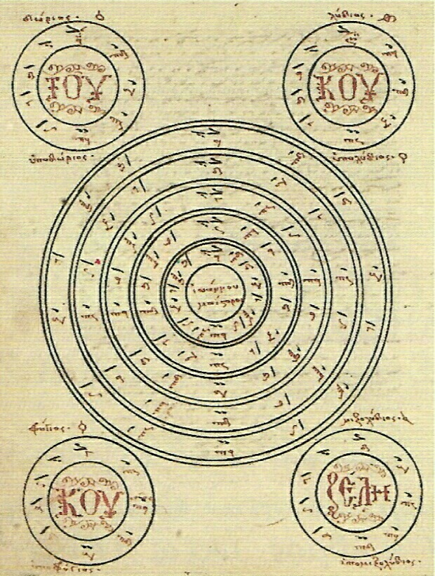

Ο Ιωάννης αποτελεί σταθμό στην ιστορία της εκκλησιαστικής μουσικής. Θεωρείται ως ο εισηγητής πολλών μουσικών σημείων με τα οποία πλουτίστηκε το αρχαίο στενογραφικό σύστημα της μουσικής παρασημαντικής. Φέρεται ως ο συντάκτης μουσικής γραμματικής, η οποία επεξηγεί τα χειρονομικά σημάδια της μουσικής γραφής7. Υπήρξε σπουδαίος θεωρητικός, συγγράφοντας το θεωρητικό έργο «Τέχνη ψαλτική και σημάδια ψαλτικά μετά πάσης χειρονομίας και συνθέσεως, ποιηθέντα παρά του Μαΐστορος Ιωάννου Κουκουζέλους». Συνέθεσε άσματα εκκλησιαστικά και δημιούργησε ένα βιβλίο με τίτλο: «Βιβλίον συν Θεώ αγίω περιέχον την άπασαν ακολουθίαν της εκκλησιαστικής τάξεως, συνταχθείσαν παρά του Μαΐστορος Ιωάννου Κουκουζέλους».
Ο τροχός του Κουκουζέλη από χειρόγραφο της παλαιάς γραφής (Χφ. ΒΚΨ 22)
Συνέταξε το «Μέγιστο Τροχό της Μουσικής», ο οποίος εκθέτει σχηματικά τον τρόπο γέννησης της εκκλησιαστικής οκτωηχίας σε συσχετισμό με το τροπικό σύστημα της αρχαίας ελληνικής μουσικής8. Ο Τροχός αυτός έχει τέσσερις μικρότερους τροχούς. Αυτό που παρατηρούμε από την παραπάνω εικόνα είναι η αντιστοιχία των αρχαίων τρόπων (Δώριος, Λύδιος, Φρύγιος, Μιξολύδιος, Υποδώριος, Υπολύδιος, Υποφρύγιος και Υπομιξολύδιος) με τους βυζαντινούς ήχους (Α’, Β’, Γ’, Δ’, Πλ. Α’, Πλ. Β’, Βαρύς και Πλ. Δ’ αντίστοιχα) ως γέφυρα και προέκταση της μουσικής πραγματικότητας και το πέρασμα από την αρχαιότητα στη βυζαντινή εποχή9.

Το Μέγα Ίσον του Κουκουζέλη εξηγηθέν παρά Πέτρου Πελοποννησίου
Συνέγραψε το περίφημο μάθημα του «Μεγάλου Ίσου της Παπαδικής», το οποίο περιλαμβάνεται στα παλιά χειρόγραφα Παπαδικής, όπου εκτίθενται με τρόπο μεθοδικό και σταδιακό όλα τα σημεία της μουσικής γραφής και η ενέργειά τους10. Το τελευταίο μεταφέρθηκε αρχικά από τον Πέτρο τον Πελοποννήσιο στην παρασημαντική αυτού και ύστερα από τους τρεις εφευρέτες του νέου συστήματος στη νέα παρασημαντική11.

Το Μέγα Ίσον του Κουκουζέλη μεταφρασθέν στην καθ' ημάς Γραφή παρά Χουρμουζίου Χαρτοφύλακος
Συνέθεσε σειρά Χερουβικών, Κοινωνικών και Αλληλουιαρίων σε κάθε ήχο, καθώς και τα Μέγιστα Ανοιξαντάρια12. Από αυτά σώζεται ένα Χερουβικό σε ήχο Πλ. Β’ (παλατιανόν), ένα Κοινωνικό «Αινείται» σε ήχο Πλ. Α’, ένα Κοινωνικό «Γεύσασθε» σε ήχο Πλ. Α’, τα μεγάλα και έντεχνα Ανοιξαντάρια, το αργό «Μακάριος Ανήρ», το εις την αρτοκλασία «Χαίρε Κεχαριτωμένη» κατά αναγραμματισμό σε ήχο Α’ τετράφωνο, Αλληλουιάρια σε ήχο Α’ και Πλ. Α’, το «Άνωθεν οι Προφήται», την φήμη «Τον δεσπότην και αρχιερέα», πολυελέους, δοχάς, καλοφωνικούς ειρμούς, πασαπνοάρια κ.α13. Από τα έργα του αρκετά έχουν μεταφερθεί στη σύγχρονη παρασημαντική14.
Πολλά από τα σπουδαία έργα του διασώζονται στις πλούσιες αγιορείτικες βιβλιοθήκες και ιδιαίτερα σε αυτήν της Λαύρας. Στη Μεγίστη Λαύρα υπάρχει και χειρόγραφη ακολουθία προς τιμή του, όπως και στη σκήτη των Καυσοκαλυβίων. Νεώτερη ακολουθία συνέθεσε ο μοναχός Γεράσιμος Μικραγιαννανίτης, ενώ ο Γ. Θ. Μηλίτσης παρακλητικό κανόνα και εγκώμια15.

Στην Ι.Μ. Μεγίστης Λαύρας υπάρχει εικόνα του Αγίου που τον παρουσιάζει περικυκλωμένο με τα μουσικά του σύμβολα, τα «νεύματα»